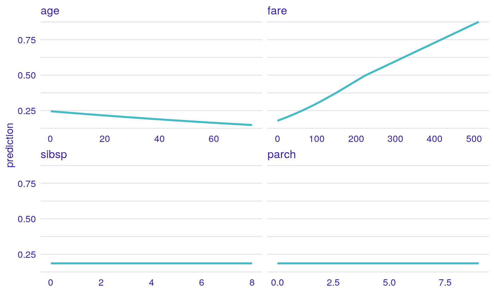
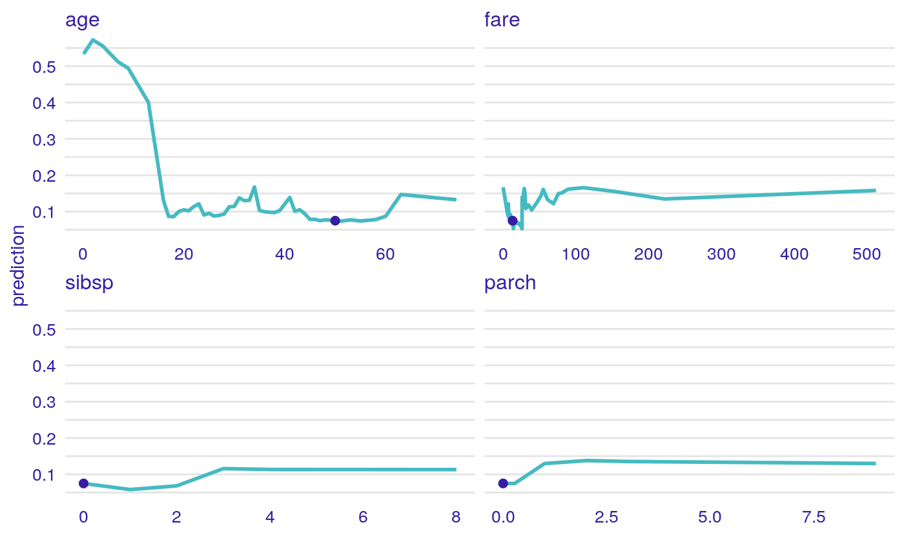

Prints Ceteris Paribus Descriptions
Prints Ceteris Paribus Descriptions
# S3 method for ceteris_paribus_descriptions print(x, ...)
Arguments
| x | an individual variable profile explainer produced with the `describe()` function |
|---|---|
| ... | other arguments |
Examples
library("DALEX") # Toy examples, because CRAN angels ask for them titanic <- na.omit(titanic) model_titanic_glm <- glm(survived == "yes" ~ gender + age + fare, data = titanic, family = "binomial") explain_titanic_glm <- explain(model_titanic_glm, data = titanic[,-9], y = titanic$survived == "yes") cp_rf <- ceteris_paribus(explain_titanic_glm, titanic[1,]) cp_rf#> Top profiles : #> gender age class embarked country fare sibsp parch #> 1 male 42.0000000 3rd Southampton United States 7.11 0 0 #> 1.1 female 42.0000000 3rd Southampton United States 7.11 0 0 #> 11 male 0.1666667 3rd Southampton United States 7.11 0 0 #> 1.110 male 2.0000000 3rd Southampton United States 7.11 0 0 #> 1.2 male 4.0000000 3rd Southampton United States 7.11 0 0 #> 1.3 male 7.0000000 3rd Southampton United States 7.11 0 0 #> _yhat_ _vname_ _ids_ _label_ #> 1 0.1857672 gender 1 lm #> 1.1 0.6711517 gender 1 lm #> 11 0.2452313 age 1 lm #> 1.110 0.2423748 age 1 lm #> 1.2 0.2392846 age 1 lm #> 1.3 0.2347001 age 1 lm #> #> #> Top observations: #> gender age class embarked country fare sibsp parch _yhat_ _label_ #> 1 male 42 3rd Southampton United States 7.11 0 0 0.1857672 lm #> _ids_ #> 1 1describe(cp_rf)#> For gender = male the model response is 0.19 #> Model results *higher* values for: female #> #> For age = 42 the model response is 0.19 #> Model responses are *higher* for *lower* values of age #> #> For class = 3rd the model response is 0.19 #> Model results *higher* values for: 2nd, 1st, engineering crew, victualling crew, restaurant staff, deck crew #> #> For embarked = Southampton the model response is 0.19 #> Model results *higher* values for: Cherbourg, Queenstown, Belfast #> #> For country = United States the model response is 0.19 #> Model results *higher* values for: England, Norway, France, Lebanon, Finland, Sweden, Argentina, Canada, Denmark, Bulgaria, Switzerland, Channel Islands, Bosnia, Hungary, Ireland, Italy, India, Wales, South Africa, Croatia (Modern), Scotland, Siam, Uruguay, Belgium, Poland, Australia, Peru, Spain, Egypt, Japan, Syria, Russia, Slovenia, Greece, Turkey, China/Hong Kong, Austria, Latvia, Yugoslavia, Slovakia (Modern day), Germany, Croatia, Cuba, Mexico, Northern Ireland, Guyana, Netherlands #> #> For fare = 7.11 the model response is 0.19 #> Model responses are *higher* for *higher* values of fare #> #> For sibsp = 0 the model response is 0.19 #> Model responses are *higher* for *higher* values of sibsp #> #> For parch = 0 the model response is 0.19 #> Model responses are *higher* for *higher* values of parch #>plot(cp_rf)library("randomForest") model_titanic_rf <- randomForest(survived == "yes" ~ gender + age + class + embarked + fare + sibsp + parch, data = titanic)#> Warning: The response has five or fewer unique values. Are you sure you want to do regression?model_titanic_rf#> #> Call: #> randomForest(formula = survived == "yes" ~ gender + age + class + embarked + fare + sibsp + parch, data = titanic) #> Type of random forest: regression #> Number of trees: 500 #> No. of variables tried at each split: 2 #> #> Mean of squared residuals: 0.1425703 #> % Var explained: 34.95explain_titanic_rf <- explain(model_titanic_rf, data = titanic[,-9], y = titanic$survived == "yes", label = "Random Forest v7") selected_passangers <- select_sample(titanic, n = 1) cp_rf <- ceteris_paribus(explain_titanic_rf, selected_passangers) cp_rf#> Top profiles : #> gender age class embarked country fare sibsp #> 1960 male 36.0000000 victualling crew Southampton England 0 0 #> 1960.1 female 36.0000000 victualling crew Southampton England 0 0 #> 19601 female 0.1666667 victualling crew Southampton England 0 0 #> 1960.110 female 2.0000000 victualling crew Southampton England 0 0 #> 1960.2 female 4.0000000 victualling crew Southampton England 0 0 #> 1960.3 female 7.0000000 victualling crew Southampton England 0 0 #> parch _yhat_ _vname_ _ids_ _label_ #> 1960 0 0.1545171 gender 1960 Random Forest v7 #> 1960.1 0 0.7886791 gender 1960 Random Forest v7 #> 19601 0 0.6865937 age 1960 Random Forest v7 #> 1960.110 0 0.6791542 age 1960 Random Forest v7 #> 1960.2 0 0.6994946 age 1960 Random Forest v7 #> 1960.3 0 0.6904595 age 1960 Random Forest v7 #> #> #> Top observations: #> gender age class embarked country fare sibsp parch _yhat_ #> 1960 female 36 victualling crew Southampton England 0 0 0 0.7886791 #> _label_ _ids_ #> 1960 Random Forest v7 1describe(cp_rf)#> For gender = female the model response is 0.79 #> Model results *lower* values for: male #> #> For age = 36 the model response is 0.79 #> Model responses are *lower* for *lower* values of age #> #> For class = victualling crew the model response is 0.79 #> Model results *lower* values for: 1st, restaurant staff, deck crew, 3rd, engineering crew #> #> For embarked = Southampton the model response is 0.79 #> Model results *lower* values for: Queenstown, Belfast #> #> For country = England the model response is 0.79 #> Model results *higher* values for: Norway, France, Lebanon, Finland, Sweden, Argentina, Canada, Denmark, Bulgaria, Switzerland, Channel Islands, Bosnia, Hungary, Ireland, Italy, India, Wales, South Africa, Croatia (Modern), Scotland, Siam, Uruguay, Belgium, Poland, Australia, Peru, Spain, Egypt, Japan, Syria, Russia, Slovenia, Greece, Turkey, China/Hong Kong, Austria, Latvia, Yugoslavia, Slovakia (Modern day), Germany, Croatia, Cuba, Mexico, Northern Ireland, Guyana, Netherlands #> #> For fare = 0 the model response is 0.79 #> Model responses are *lower* for *higher* values of fare #> #> For sibsp = 0 the model response is 0.79 #> Model responses are *lower* for *higher* values of sibsp #> #> For parch = 0 the model response is 0.79 #> Model responses are *lower* for *higher* values of parch #>